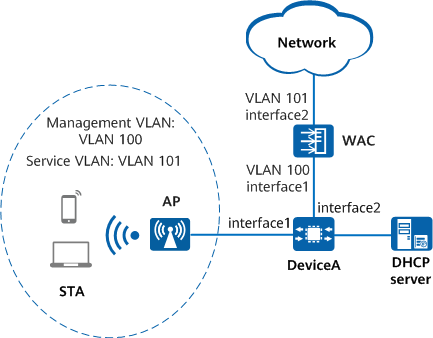

Example for Configuring a WPA2-PSK-AES Security Policy
Networking Requirements
Without a proper security policy deployed, a WLAN may be exposed to security risks due to its openness. In this example, the customer does not require the WLAN to be highly secure, so no authentication server is required. Instead, a security policy with WPA/WPA2-PSK authentication can meet the customer's requirement. STAs on the network support WPA/WPA2 authentication and TKIP or AES encryption. The networking requirements are as follows:
- WAC networking mode: Layer 2 in-path networking
- DHCP deployment mode: A third-party DHCP server is used to assign IP addresses to APs and STAs.
- Security policy: WPA2-PSK-AES

In this example, interface1 and interface2 represent 10GE0/0/1 and 10GE0/0/2, respectively.

To complete the configuration, you need the following data:
- Management VLAN for APs: VLAN 100; service VLAN for STAs: VLAN 101
- IP address pool for APs: 10.23.100.2 to 10.23.100.254/24
- IP address pool for STAs: 10.23.101.2 to 10.23.101.254/24
- WAC's source interface and its IP address: 10GE 100 at 10.23.100.1/24
- AP group name: ap-group1
- Regulatory domain profile name: domain1; country code: CN
- SSID profile name: wlan-ssid; SSID name: wlan-net
- Security profile name: wlan-security; security policy: WPA2+PSK+AES; password: YsHsjx_202206
- VAP profile name: wlan-vap
Configuration Roadmap
- Configure STA access services so that STAs can access the WLAN properly.
- Configure a WPA2 security policy using PSK authentication and AES encryption in a security profile.
Precautions
- No ACK mechanism is available for multicast packet transmission over unstable wireless links of air interfaces. For this reason, multicast packets are usually sent at low rates to ensure stable transmission. However, if a large number of multicast packets are sent from the network side, air interfaces may be congested. Therefore, you are advised to configure multicast packet suppression to reduce the impact of numerous low-rate multicast packets on the wireless network. Exercise caution when configuring the rate limit if there are multicast services on the network, as this may affect the multicast services.
- In direct forwarding mode, you are advised to configure multicast packet suppression on the interfaces of a switch connected to APs.
The port isolation configuration is recommended on the ports of the device directly connected to APs. If port isolation is not configured and direct forwarding is used, a large number of unnecessary broadcast packets may be generated in the VLAN, blocking the network and degrading user experience.
Procedure
- Configure network connectivity between the WAC, APs, and other network devices.
# Configure the WAC to communicate with network devices. Add 10GE0/0/1 to VLAN 100 (management VLAN) and 10GE0/0/2 to VLAN 101 (service VLAN).
<HUAWEI> system-view [HUAWEI] sysname WAC [WAC] vlan batch 100 101 [WAC] interface 10ge 0/0/1 [WAC-10GE0/0/1] port link-type trunk [WAC-10GE0/0/1] port trunk allow-pass vlan 100 [WAC-10GE0/0/1] quit [WAC] interface 10ge 0/0/2 [WAC-10GE0/0/2] port link-type trunk [WAC-10GE0/0/2] port trunk allow-pass vlan 101 [WAC-10GE0/0/2] quit
Configure uplink interfaces on the WAC to transparently transmit packets in the service VLAN for communication with the upstream device.
# Add 10GE0/0/0 and 10GE0/0/2 on DeviceA to VLANs as required, and set the PVID of 10GE0/0/0 to VLAN 100.<HUAWEI> system-view [HUAWEI] sysname DeviceA [DeviceA] vlan batch 100 101 [DeviceA] interface 10ge 0/0/1 [DeviceA-10GE0/0/1] port link-type trunk [DeviceA-10GE0/0/1] port trunk pvid vlan 100 [DeviceA-10GE0/0/1] port trunk allow-pass vlan 100 101 [DeviceA-10GE0/0/1] port-isolate enable group 1 [DeviceA-10GE0/0/1] quit [DeviceA] interface 10ge 0/0/2 [DeviceA-10GE0/0/2] port link-type trunk [DeviceA-10GE0/0/2] port trunk allow-pass vlan 100 [DeviceA-10GE0/0/2] quit
- Configure a third-party DHCP server to assign IP addresses to APs from the IP address pool 10.23.100.2-10.23.100.254/24 and to STAs from the IP address pool 10.23.101.2-10.23.101.254/24. For the configuration method, see the manual of the third-party device.
- Configure APs to go online.# Create an AP group to which APs requiring the same configuration are added.
[WAC] wlan [WAC-wlan] ap-group name ap-group1 [WAC-wlan-ap-group-ap-group1] quit
# Create a regulatory domain profile, configure the country code of the WAC in the profile, and bind the profile to the AP group.[WAC-wlan] regulatory-domain-profile name domain1 [WAC-wlan-regulate-domain-default] country-code cn Warning: Modifying the country code will clear the channel and power configurations of radios, and requires the APs to be restarted if they run V200R019C10 or earlier. Continue? [Y/N]:y [WAC-wlan-regulate-domain-default] quit [WAC-wlan] ap-group name ap-group1 [WAC-wlan-ap-group-ap-group1] regulatory-domain-profile domain1 Warning: This configuration change will clear the channel and power configurations of radios, and may restart APs. Continue? [Y/N]:y [WAC-wlan-ap-group-ap-group1] quit [WAC-wlan] quit
# Configure the WAC's source interface.
The CAPWAP source interface can be successfully configured only when all the required security-related configurations exist. If any of such configurations does not exist, the system prompts you to supplement related configurations first. In the current version, the system checks whether the PSK configuration for DTLS encryption exists.
[WAC] interface vlanif 100 [WAC-Vlanif100] ip address 10.23.100.1 24 [WAC-Vlanif100] quit [WAC] capwap source interface vlanif 100 Set the DTLS PSK(contains 8-32 plain-text characters, or 128 or 148 cipher-text characters that must be a combination of at least two of the following: lowercase letters a to z, uppercase letters A to Z, digits, and special characters):******
# Enable the function of establishing CAPWAP DTLS sessions in none authentication mode.[WAC] capwap dtls no-auth enable Warning: This operation allows for device access in non-DTLS encryption mode even when DTLS is enabled and brings security risks. After the device goes online for the first time, disable this function to prevent security risks. Continue? [Y/N]:y
By default, DTLS encryption is enabled for CAPWAP control tunnels on the WAC. With this function enabled, APs fail to go online when being added. In this case, enable the function of establishing CAPWAP DTLS sessions in none authentication mode so that the APs can obtain security credentials. After the APs go online, disable this function immediately in order to prevent unauthorized APs from going online.
# Import the AP on the WAC, and add the AP to the AP group ap-group1. Assume that the AP's MAC address is 00e0-fc12-3456. Configure a name for the AP based on the AP position, so that you can easily know where the AP is deployed based on its name. For example, name the AP area_1 if it is deployed in area 1. The default AP authentication mode is MAC address authentication. If the default setting has not been changed, you do not need to run the ap auth-mode mac-auth command.
The AP used in this example has two radios: radio 0 (2.4 GHz) and radio 1 (5 GHz).
[WAC] wlan [WAC-wlan] ap auth-mode mac-auth [WAC-wlan] ap-id 0 ap-mac 00e0-fc12-3456 [WAC-wlan-ap-0] ap-name area_1 Warning: The AP name cannot be the MAC address of another AP. Otherwise, the AP name may be lost after the device restarts. [WAC-wlan-ap-0] ap-group ap-group1 Warning: This operation may cause AP reset. If the country code changes, it will clear channel, power and antenna gain configurations of the radio, Whether to continue? [Y/N]:y [WAC-wlan-ap-0] quit# Power on the AP and run the display ap all command to check the AP state. If the State field displays nor, the AP goes online successfully.[WAC-wlan] display ap all Total AP information: nor : normal [1] ExtraInfo : Extra information P : insufficient power supply --------------------------------------------------------------------------------------------------- ID MAC Name Group IP Type State STA Uptime ExtraInfo --------------------------------------------------------------------------------------------------- 0 00e0-fc12-3456 area_1 ap-group1 10.23.100.254 AirEngine5760-51 nor 0 10S - ---------------------------------------------------------------------------------------------------
# Disable the function of establishing CAPWAP DTLS sessions in none authentication mode.[WAC-wlan] quit [WAC] undo capwap dtls no-auth enable
- Configure WLAN service parameters.
# Create the security profile wlan-security and configure a WPA2-PSK-AES security policy in the profile.
[WAC] wlan [WAC-wlan] security-profile name wlan-security [WAC-wlan-sec-prof-wlan-security] security wpa2 psk pass-phrase YsHsjx_202206 aes [WAC-wlan-sec-prof-wlan-security] quit
# Create the SSID profile wlan-ssid and set the SSID name to wlan-net.
[WAC-wlan] ssid-profile name wlan-ssid [WAC-wlan-ssid-prof-wlan-ssid] ssid wlan-net [WAC-wlan-ssid-prof-wlan-ssid] quit
# Create the VAP profile wlan-vap, set the service data forwarding mode and service VLAN, and bind the security profile and SSID profile to the VAP profile.
[WAC-wlan] vap-profile name wlan-vap [WAC-wlan-vap-prof-wlan-vap] service-vlan vlan-id 101 [WAC-wlan-vap-prof-wlan-vap] security-profile wlan-security [WAC-wlan-vap-prof-wlan-vap] ssid-profile wlan-ssid [WAC-wlan-vap-prof-wlan-vap] quit
# Bind the VAP profile wlan-vap to radios 0 and 1 of APs in the AP group ap-group1.
[WAC-wlan] ap-group name ap-group1 [WAC-wlan-ap-group-ap-group1] vap-profile wlan-vap wlan 1 radio 0 [WAC-wlan-ap-group-ap-group1] vap-profile wlan-vap wlan 1 radio 1 [WAC-wlan-ap-group-ap-group1] quit
- Configure channels and power for AP radios.
The Dynamic Channel Assignment (DCA) and Transmit Power Control (TPC) functions are enabled by default. The manual channel and power configurations take effect only when the two functions are disabled.
The channel and power settings for the AP radios in this example are for reference only. In practice, configure the channel and power of AP radios based on the actual country code and network planning.
# Configure channel and power information for radio 0 of APs.[WAC-wlan] ap-id 0 [WAC-wlan-ap-0] radio 0 [WAC-wlan-ap-0-radio-0] calibrate auto-channel-select disable [WAC-wlan-ap-0-radio-0] calibrate auto-txpower-select disable [WAC-wlan-ap-0-radio-0] channel 20mhz 6 Warning: This action may cause service interruption. Continue?[Y/N]y [WAC-wlan-ap-0-radio-0] eirp 127 [WAC-wlan-ap-0-radio-0] quit# Configure channel and power information for radio 1 of APs.[WAC-wlan-ap-0] radio 1 [WAC-wlan-ap-0-radio-1] calibrate auto-channel-select disable [WAC-wlan-ap-0-radio-1] calibrate auto-txpower-select disable [WAC-wlan-ap-0-radio-1] channel 20mhz 149 Warning: This action may cause service interruption. Continue?[Y/N]y [WAC-wlan-ap-0-radio-1] eirp 127 [WAC-wlan-ap-0-radio-1] quit [WAC-wlan-ap-0] quit [WAC-wlan] quit
Verifying the Configuration
# Run the display security-profile command to check information about a security profile.
[WAC] display security-profile name wlan-security ------------------------------------------------------------ Security policy : WPA2 PSK Encryption : AES PMF : disable ------------------------------------------------------------ WPA's configuration PTK update : disable PTK update interval(s) : 43200 Group key negotiation : enable ------------------------------------------------------------ WAPI's configuration PKI realm : - Authentication server IP : - WAI timeout(s) : 60 BK update interval(s) : 43200 BK lifetime threshold(%) : 70 USK update method : Time-based USK update interval(s) : 86400 MSK update method : Time-based MSK update interval(s) : 86400 Cert auth retrans count : 3 USK negotiate retrans count : 3 MSK negotiate retrans count : 3 ------------------------------------------------------------
# Run the display vap all command to check the VAP authentication mode based on the Auth type field.
# STAs can discover the WLAN with the SSID wlan-net and successfully access the WLAN after users enter the correct key.
Configuration Scripts
DeviceA
# sysname DeviceA # vlan batch 100 to 101 # interface 10GE0/0/1 port link-type trunk port trunk pvid vlan 100 port trunk allow-pass vlan 100 to 101 port-isolate enable group 1 # interface 10GE0/0/2 port link-type trunk port trunk allow-pass vlan 100 # return
- WAC
# sysname WAC # vlan batch 100 to 101 # interface Vlanif100 ip address 10.23.100.1 255.255.255.0 # interface 10GE0/0/1 port link-type trunk port trunk allow-pass vlan 100 # interface 10GE0/0/2 port link-type trunk port trunk allow-pass vlan 101 # capwap source interface vlanif 100 capwap dtls psk %+%##!!!!!!!!!"!!!!"!!!!*!!!!a4O4$.&PxRTGtHR(VaB4*(KhWT"C@K+HZ%@!!!!!2jp5!!!!!!;!!!!..AjEF}u<=!%e=F%Dz-Y[R--3yrC-*MV Xf<!!!!!%+%# # wlan security-profile name wlan-security security wpa2 psk pass-phrase %+%##!!!!!!!!!"!!!!"!!!!*!!!!a4O4$.&PxR`C+|'x<+f;\@++YLf$\GG6&eI!!!!!2jp5!!!!!!<!!!!Wdv@E<P1Q*>zJ%Mg [mG1.z9mPeH6X~$&/WA!!!!!%+%# aes ssid-profile name wlan-ssid ssid wlan-net vap-profile name wlan-vap service-vlan vlan-id 101 ssid-profile wlan-ssid security-profile wlan-security regulatory-domain-profile name domain1 ap-group name ap-group1 regulatory-domain-profile domain1 radio 0 vap-profile wlan-vap wlan 1 radio 1 vap-profile wlan-vap wlan 1 ap-id 0 type-id 130 ap-mac 00e0-fc12-3456 ap-sn 210235554710CB000042 ap-name area_1 ap-group ap-group1 radio 0 channel 20mhz 6 eirp 127 calibrate auto-channel-select disable calibrate auto-txpower-select disable radio 1 channel 20mhz 149 eirp 127 calibrate auto-channel-select disable calibrate auto-txpower-select disable # return